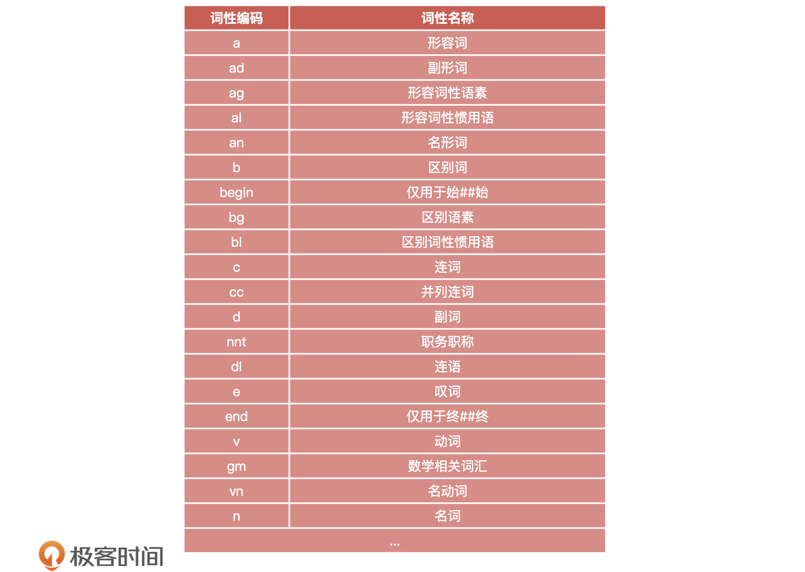
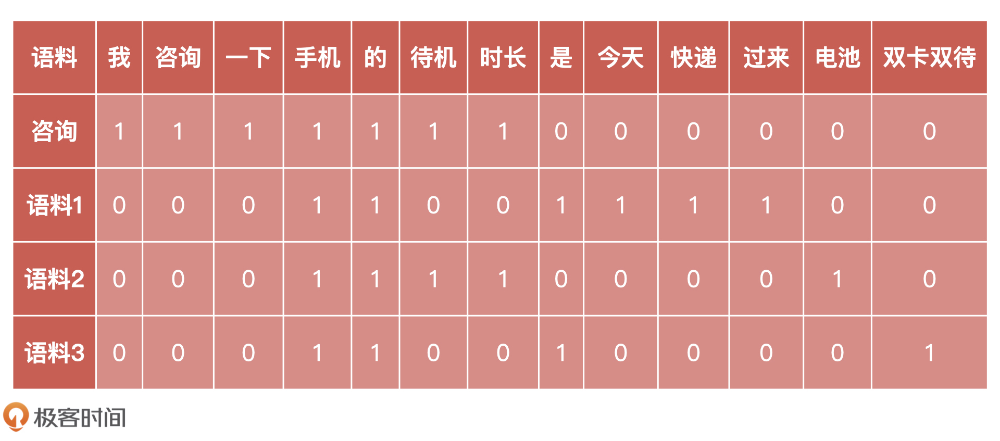
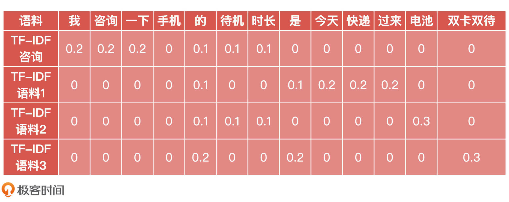
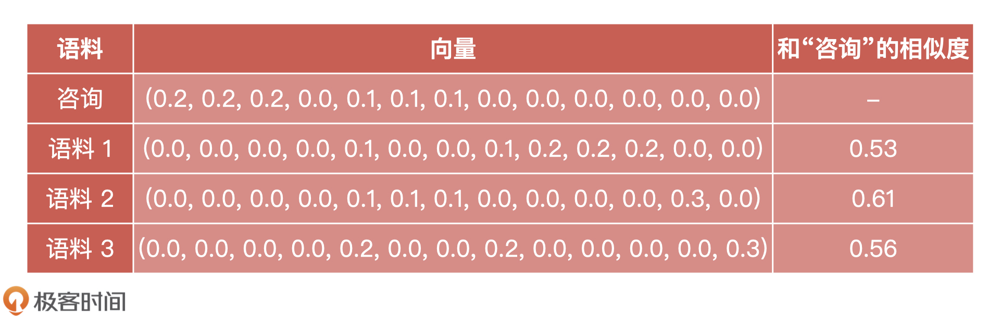
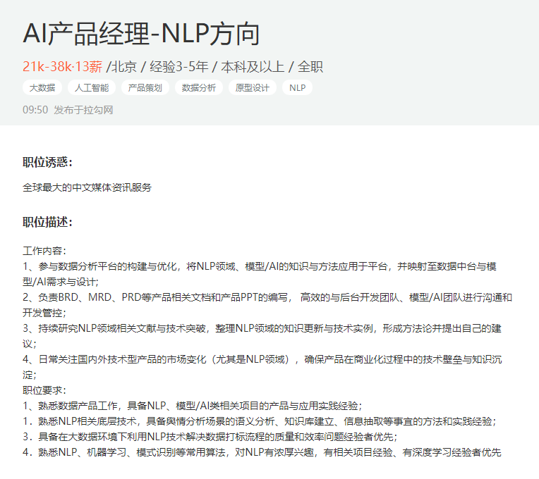

- 00 开篇词 你好，产品经理！你的未来价值壁垒在哪儿？.md.html
- 01 行业视角：产品经理眼中的人工智能.md.html
- 02 个人视角：成为AI产品经理，要先搞定这两个问题.md.html
- 03 技术视角：AI产品经理需要懂的技术全景图.md.html
- 04 过来人讲：成为AI产品经理的两条路径.md.html
- 05 通过一个 AI 产品的落地，掌握产品经理工作全流程.md.html
- 06 AI 模型的构建过程是怎样的？（上）.md.html
- 07 AI模型的构建过程是怎样的（下）.md.html
- 08 算法全景图：AI产品经理必须要懂的算法有哪些？.md.html
- 09 K近邻算法：机器学习入门必学算法.md.html
- 10 线性回归：教你预测，投放多少广告带来的收益最大.md.html
- 11 逻辑回归：如何预测用户是否会购买商品？.md.html
- 12 朴素贝叶斯：让AI告诉你，航班延误险该不该买？.md.html
- 13 决策树与随机森林：如何预测用户会不会违约？.md.html
- 14 支持向量机：怎么预测股票市场的涨与跌？.md.html
- 15 K-means 聚类算法：如何挖掘高价值用户？.md.html
- 16 深度学习：当今最火的机器学习技术，你一定要知道.md.html
- 17 模型评估：从一个失控的项目看优秀的产品经理如何评估AI模型？.md.html
- 18 核心技能：产品经理评估模型需要关注哪些指标？.md.html
- 19 模型性能评估（一）：从信用评分产品看什么是混淆矩阵？.md.html
- 20 模型性能评估（二）：从信用评分产品看什么是KS、AUC？.md.html
- 21 模型性能评估（三）：从股价预测产品看回归算法常用的评估指标.md.html
- 22 模型稳定性评估：如何用PSI来评估信用评分产品的稳定性？.md.html
- 23 模型监控：产品经理如何建设算法模型监控指标体系？.md.html
- 24 推荐类产品（一）：推荐系统产品经理的工作职责与必备技能.md.html
- 25 推荐类产品（二）：从0打造电商个性化推荐系统产品.md.html
- 26 预测类产品（一）：用户复购意向预测的底层逻辑是什么？.md.html
- 27 预测类产品（二）：从0打造一款预测用户复购意向的产品.md.html
- 28 预测类产品（三）：从0打造一款“大白信用评分产品”.md.html
- 29 自然语言处理产品：从0打造一款智能客服产品.md.html
- 30 AI产品经理，你该如何提升自己的价值？.md.html
- 31 AI产品经理面试，这些问题你必须会答！.md.html
- 春节加餐1 用户增长模型：怎么利用AI技术判断新渠道性价比？.md.html
- 春节加餐2 一次答疑，带你回顾模型评估的所有基础概念.md.html
- 期中周测试题 ，你做对了吗？.md.html
- 期中答疑 AI产品经理热门问题答疑合集.md.html
- 结束语 唯一不变的，就是变化本身！.md.html
- 捐赠
29 自然语言处理产品：从0打造一款智能客服产品
你好，我是海丰。
自然语言处理（NLP，Natural Language Processing）可以说是当今人工智能最活跃的垂直领域之一了，它是一种通过机器学习方法对自然语言进行分析和发掘的处理技术。自然语言处理的应用场景非常广泛：
- 电商平台中的评论情感分析，通过 NLP 技术分析用户购买商品后的态度；
- 商场的导购机器人通过 NLP 技术去理解用户的语义；
- 在文本分析、智能问诊、搜索应用中也都有自然语言处理技术的应用。
对于AI产品经理来说，我们主要的工作场景，除了有之前讲过的预测类、推荐类和风控类场景，还有自然语言处理场景。今天，我们就来学习一下，怎么牵头建设一款智能客服产品，从而帮助你理解和掌握自然语言处理技术的应用场景、处理流程和基本的技术原理。
我们先来说一下这个需求的背景：为了减轻客服的回复压力，公司现在需要通过 AI 辅助客服回复客户提出的问题，具体的方案是通过自然语言处理技术对客户的问题做语义分析和理解，然后找到问题库中最相近的问题，再把预设的答案回复给客户。
这个过程一共需要4个步骤才能完成，分别是语料获取、语料预处理、文本表示和文本计算。接下来，我们就一一来说。
语料获取
想要打造一款智能客服产品，第一步就是获取语料，形成语料库。所谓的语料就是模型的训练数据集，在客服系统中，语料就是客户的提问与客服人员的问答数据，以及用户对电商网站中某个商品的评价信息等等。
获取语料的途径有很多，一般来说可以分成三种，分别是业务积累、网络收集，以及外部采购。下面，我们就来详细说说。
最准确和方便的方式，就是从业务积累的历史语料中直接获取。根据存储形式的不同，我们的获取方式也会不同，主要可以分为以下两种：
- 存储在数据库中的语料，它处理起来最为方便，我们可以通过脚本直接从数据库中提取
- 没有进行过电子化，以纸质文件档案的方式存储的语料，它处理起来会复杂很多，需要通过人工录入或者扫描识别等方式进行电子化
为了丰富语料库，一般我们还会补充一些如新闻资讯、维基百科等语料，这些内容都可以从网络上获取。网络上有很多开放的数据集，比如 Wiki 百科数据集、中文汉语搜狗语料、 人民日报语料等等，都可以直接从网上下载。除此之外，我们也可以通过爬虫程序快速抓取网络上的公开语料信息。
但是，也有很多专业的语料集合在网络上都是不公开的，我们只能通过采购的方式获取它们。比如，购买电商行业的评论信息、某专业领域的文献资料，或者旅行行业的游记等等。当然，这里的语料获取会有合规性上的操作，这和我们课程无关，我就不展开了。
在做自然语言处理相关项目的时候，语料集的获取是项目的第一步，也是最为重要的一步，因为它的好坏决定了整个项目的成败关键。那么，咱们智能客服场景的语料主要来自两方面：
- 专业语料库，用于回答客户的问题咨询
- 开放的数据集，用于回答客户的闲聊问题
语料预处理
获取到语料之后，接下来就是项目中最耗时、费力的工作，语料预处理了。在实际工作中，产品经理不需要参与语料预处理的工作，但要理解语料预处理的工作流程。
通常来说，算法工程师在项目中超过一半的工作时间都在进行语料预处理，常见的操作有语料标注和数据清洗。例如，我列举的这几条语料就需要进行清洗、分词和词性标注。
- ｉｐｈｏｎｅ１２的摄像头的分辨率是多少啊 @_@ ?
- 武汉市长江大桥，是中国第一座横跨长江的桥梁。
- 北京大学教授正在教授人工智能课程
首先，我们来看语料清洗。
语料清洗，顾名思义就是将无用的噪音内容去掉，只保留对我们有用的主体内容。常见的是通过编写脚本，采用正则表达式匹配的方式去清洗数据，具体包括全半角转换、大小写转换、繁简体转换、无意义符号移除等等。如果是通过爬虫抓取的网页内容，我们还要去除广告、HTML 标签或注释、JavaScript、CSS代码。
这里，我列举了几种简单、常见的清洗方式，你可以看看：
- 全半角转换：将在输入法全角模式下输入的内容转换为半角模式的，主要对英文、数字、标点符号有影响，如将“ｊｉｐｉａｏ１２３”全角输入转成半角模式下的“jipiao123”。
- 大小写转换：统一将大写形式的字母转成小写形式的。
- 繁简体转换：将繁体输入转成简体的形式，当然考虑到用户群体的差异以及可能存在繁体形式的资源，有些情况还需要保留转换前的繁体输入用于召回。
- 无意义符号移除：移除诸如火星文符号、emoji表情符号、URL地址等特殊符号内容。
清洗完语料之后，接下来要做的就是分词。因为中文语料数据都是短文本或长文本组成的句子，所以我们在进行文本挖掘分析时，需要将这些句子处理成最小单位粒度的字符或者词语。可以使用的分词工具比较多，常见的有以下 3 类：
- 基于规则匹配的分词方法；
- 基于统计的分词方法；
- 基于语义理解的分词方法。
这些方法你了解一下就可以了。除此之外，我还想再补充说明一点，目前中文分词算法的主要技术难点在于“歧义识别”和“新词识别”。比如说：“武汉市长江大桥”，这个句子可以切分成“武汉市/长江大桥”，也可切分成“武汉/市长/江大桥”，如果不依赖上下文其他的句子，恐怕我们很难知道怎么去理解。
分词完成后，我们要对分词后的词性进行标注。词性标注就是给每个字或者词语打标签，主要方式包括普通词性标注和专业标注：
- 普通词性标注：将句子中的词标记为名词、动词或者形容词等等
- 专业词性标注：针对特定行业领域的词性标注，如医疗行业、教育行业等等
不过，词性标注可不是我们必需要做的事情。因为常见的文本分类并不用关心词性的问题，但如果涉及情感分析、知识推理等和上下文相关的处理，我们就需要考虑词性标注的问题了。
比如我们案例中的原始句子：“教授正在教授人工智能课程”。
- 规则匹配词性标注后的分词：[教授/nnt, 正在/d, 教授/nnt, 人工智能/gm,课程/n]
- 语义理解词性标注后的分词：[教授/nnt, 正在/d, 教授/v, 人工智能/gm, 课程/n]
除此之外，我还在下面列举出了实际工作中的词性编码表，你可以作为了解。

文本表示
语料预处理完成后，就需要将分好词的语料转化为计算机可以处理的类型。由于模型只能处理数量化的信息，因此我们需要将已分词的字符转化成编码或向量矩阵的形式，常用的语料特征提取方式是“词袋模型”。
词袋模型是最基础的文本表示模型，我们可以把它看作是一种比较文本之间相似度的工具。那它是怎么提取特征的呢？下面，我们通过一个客户咨询的例子来详细说明一下。
假设，针对手机待机时长这个问题，我们在语料库中预设了三条标准语料（按照常识来说，待机时长这个问题的正确回答中应该有数字。事实上，每条语料都会对应一套回复，比如语料 2 会存在类似“手机的电池待机时长是x小时”这样的回复。这样设置语料是为了更准确地比较它和用户的问题的相似度，所以像数值化的信息会被事先清洗掉）。
正好，有一位客户咨询了这个问题：“我咨询一下手机的待机时长”。那么，我们需要做的就是比较客户问题与知识库中哪条语料最相似：
- 语料 1：“手机是今天快递过来的”
- 语料 2：“手机的电池待机时长”
- 语料 3：“手机是双卡双待的”
首先，我们通过分词工具，对用户咨询的问题和语料进行分词。分词后，我们可以得到如下语句：
- 客户咨询：“我 / 咨询 / 一下 / 手机 / 的 / 待机 / 时长”
- 语料 1：“手机 / 是 / 今天 / 快递 / 过来 / 的”
- 语料 2：“手机 / 的 / 电池 / 待机 / 时长”
- 语料 3：“手机 / 是 / 双卡双待 / 的”
然后，为了计算相似度，我们需要将每一个已分词的语料，通过词频表示为一个个的向量，如下所示。例如“电池”这个词，只在“语料 2”中出现 1 次，我们就标注为“1”，在其他语料中没有出现，则标注为“0”。

根据词表，我们可以得到如下 4 个向量，如下所示。
- 咨询：(1, 1, 1, 1, 1, 1, 1, 0, 0, 0, 0, 0, 0)
- 语料 1：(0, 0, 0, 1, 1, 0, 0, 1, 1, 1, 1, 0, 0)
- 语料 2：(0, 0, 0, 1, 1, 1, 1, 0, 0, 0, 0, 1, 0)
- 语料 3：(0, 0, 0, 1, 1, 0, 0, 1, 0, 0, 0, 0, 1)
就这样，每一段语料都可以被表示成一个相对较长的向量，并且向量的维度代表词的个数，频次代表这个词在语料中的出现的次数。
然后我们通过 TF-IDF 算法来计算每个词的权重，TF-IDF 算法原理就是看某个词在文章中出现的次数来评估这个词的重要程度。比如一个词在这篇文章中出现的次数很多，但在其他文章中出现的次数很少，我们就认为这个词对这篇文章比较重要。
TF-IDF 的计算公式如下（产品经理了解即可）：
\( TF-IDF = TF(t, d) \\times IDF(t) \)
\( IDF(t) =lg\\left( \\frac{m}{n} \\right) \)
其中，TF(t,d) 为关键词 t 在语料 d 中出现的频率，IDF(t) 为逆文档频率，m 为语料的总数，n 为包含关键词 t 的语料数量。最终的计算结果如下表所示。

从表中我们可以看出，每个词在每段语料中的权重，于是我们得到了每段语料经过 TF-IDF 计算后的新向量形式：
- 咨询：(0.2, 0.2, 0.2, 0.0, 0.1, 0.1, 0.1, 0.0, 0.0, 0.0, 0.0, 0.0, 0.0)
- 语料 1：(0.0, 0.0, 0.0, 0.0, 0.1, 0.0, 0.0, 0.1, 0.2, 0.2, 0.2, 0.0, 0.0)
- 语料 2：(0.0, 0.0, 0.0, 0.0, 0.1, 0.1, 0.1, 0.0, 0.0, 0.0, 0.0, 0.3, 0.0)
- 语料 3：(0.0, 0.0, 0.0, 0.0, 0.2, 0.0, 0.0, 0.2, 0.0, 0.0, 0.0, 0.0, 0.3)
文本计算
现在，我们已经有了文本向量，接下来需要做的就是计算四个文本之间的相似度。通过前面的学习我们知道，可以利用余弦距离、欧氏距离、皮尔逊相关度来计算相似度。这里，根据得到的向量，我们是使用余弦距离来计算它们的相似度。
计算的过程和我们之前讲的一样，所以我直接把计算出来的相似度结果告诉你。

因此，这三个语料和用户咨询问题的相似度的排序就是“语料 2”>“语料 3”>“语料 1”。根据这个方法，我们就能获取和用户咨询问题最相似的语料，然后将语料对应的标准回答反馈给用户了。
小结
本节课，我们通过一个“智能客服”的案例熟悉了电商场景下，一个自然语言处理模型的简单构建过程。当然，这只是一个“雏形”，实际场景中智能客服还包括很多功能，如意图识别、多轮对话、情感分析、信息提取等。不过，它们的核心构建原理都离不开自然语言处理领域的知识。
如果你想成为自然语言处理方向的产品经理，我建议你从技术和岗位这两方面来准备。
关于技术：由于自然语言处理涉足的领域技术非常多，因此你很难掌握所有 自然语言处理 的技术原理，但是对于通用的文本处理相关概念和处理流程，以及它涉及的基本原理你还是需要掌握的，比如说我们今天讲的文本分词、文本表示还有文本相似度计算，我把这些原理和概念都总结在了下面。

关于岗位：因为自然语言处理技术领域目前主要有智能客服、机器翻译、咨询处理、评论分析、智能医疗，所以相关的产品经理岗位也都是围绕这些方向进行招聘的。因此，在选定了某一个方向之后，你还需要去了解这些领域的相关知识。这里，我列举了一个自然语言处理方向的产品经理 JD，你可以作为参考。

课后讨论
我想请你列举几个你所处的业务中，哪些产品功能可以通过 NLP 进行优化？
期待在留言区看到你的思考，我们下节课见！
© 2019 - 2023 Liangliang Lee. Powered by gin and hexo-theme-book.